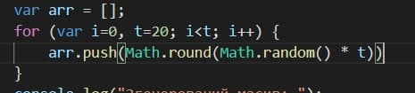
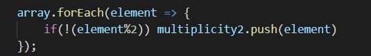
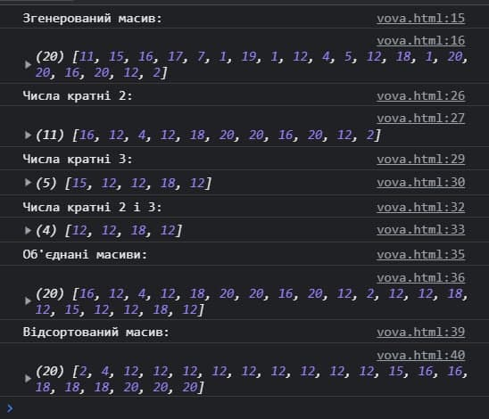

Масив (Array) JavaScript є глобальним об'єктом, який використовується для створення масивів; які є високорівневими спископодібними об'єктами.
 Ініціалізація масиву на 20 елементів та заповнюємо його рандомними елементами.
 Прохід по всім елементам масиву та виконання над ними дії.
 Результат виконання завдання, масиви створено та виведено.